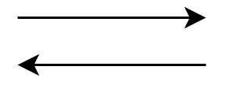

Eine Grundlage, um Software zu entwerfen und komplizierte logische Abfolgen darzustellen, bietet der PAP. In einfachen sequenziellen Schritten kann so eine komplexe Programmlogik beschrieben werden. Zumeist dient der Programmablaufplan dazu einen programmneutralen Algorithmus zu beschreiben, d.h. im PAP ist die Programmiersprache nicht festgelegt. Der Ablauf und die Logik sind universell und kann in der Programmiersprache der Wahl umgesetzt werden. Außerdem hilft der PAP einen Überblick über das Programm zu bekommen, woduch man im Debugging in der Lage ist schneller etwaige Fehler zu finden.
Elemente und Aufbau eines PAP
Die Elemente des Programmablaufplans können frei miteinander kombiniert werden und ermöglichen so eine komplette Darstellung einer Programmlogik. Folgend gebe ich eine detaillierte Beschreibung der PAP-Elemente:
| Start & Ende | Linie | Eingabe & Ausgabe |
|
Das Start und Ende Element wird im PAP durch abgerundete Rechteck dargestellt. Diese markieren den absoluten und eindeutigen Start und Ende des Programms. Ein PAP hat immer genau einen Start und ein der Regel auch nur ein Ende. In manchen Darstellungen hat ein PAP auch mehrere Enden. PAP werden von oben nach unten dargestellt, d.h. ganz oben ist der Start und ganz unten ist das Ende. |
Linien stellen im PAP die Verbindung zwischen den Elementen und den sequenziellen Ablauf dar. Diese müssen immer gerichtet sein, das heißt eine Richtung mittels Pfeil vorgeben. So wird der Programmfluss eindeutig dargestellt. Linien verbinden immer ein Element mit einem anderen, weil ein Programm Befehle immer nacheinander ausführt.  |
Die Ein- und Ausgabe wird mit einem nach rechts gekippten Rechteck (Parallelogramm) dargestellt. Dieses repräsentiert bspw. eine Eingabe von der Tastatur (Maus oder Touchpad) oder eine Ausgabe z. B. auf dem Bildschirm, per Lautsprecher, etc. |
| Operation | Verzweigung/Entscheidung | Unterprogramm |
|
Die Operation wird mit einem einfachen Rechteck dargestellt. Diese beschreiben eine Abarbeitung wie bspw. „i = i +1;“, „i = 42;“, „s = ‚Douglas Adams'“. Bei diesem Element im PAP ist eine gewisse Freiheit gegeben, denn es können nicht nur Zuweisungen, sondern auch Variablen Initialisierungen vorgenommen werden. . |
Die Verzweigung/Entscheidung ist ein essentieller Bestandteil des PAP und wird durch eine Raute dargestellt. Diese verkörpert eine Entscheidung und hat zwei Ausgänge einer für den Wahrwert (richtig, true) und den Falschwert (falsch, false). In der Entscheidung werden immer Fragen gestellt die mit booleschen Werten beantwortet werden können z. B. „i > 2?“, „s = ‚abc‘?“. Die Fragen können auch verbal formuliert sein: „Ist Wert i vorhanden?“. |
Das Unterprogramm wird mit einem Rechteck dargestellt, jedoch um zwei vertikale Linien ergänzt. Dieses Element kommt zum Einsatz wenn im PAP eine weiterer Programmteil – z. B. eine Funktion – aufgerufen werden soll. Dieser aufgerufene Programmteil kann ebenfalls in einem separaten PAP dargestellt werden. |
Beispiel
Hier seht ihr einen PAP für ein einfaches Memory Spiel, bei dem der Spieler 3 Leben hat. Das Spiel endet, wenn er alle Karten aufgedeckt hat oder keine Leben mehr hat. Dies ist nur eine sehr vereinfachte Darstellung. Natürlich könnte man diesen Plan auch noch verfeinern. Dieser PAP wurde mit dem Tool draw.io erstellt, was ihr unten verlinkt seht
An diesem Beispiel sind einige Dinge veranschaulicht:
- Der PAP hat einen Start und ein Ende, der Start ist oben und den Ende unten
- Die Richtung des PAP geht nach unten. D.h. immer, wenn es "voran" geht im Ablauf des Programmes (Richtung Ende des Spiels), geht es nach unten weiter.
- Von einem Element geht immer nur ein Pfeil bzw. Linie weg zum nächsten Element.
- Aufgrund der Verzweigung gibt es 2 Pfeile, die bei "Ende" enden. Das ist möglich und erlaubt. Manche Menschen würden hier zwei Enden machen. Das passiert aber eher bei größeren und komplexeren PAPs, wo die beiden Enden sehr weit weg voneinander sind und es unübersichtlich wäre, alle Pfeile in einem Ende enden zu lassen.
- Dieser PAP ist ausschließlich verbal formuliert und nicht sehr detailreich. Der Punkt "Nutzer wählt 1. Karte" z. B. besteht tatsächlich aus vielen Einzelaktionen, die hier nicht stehen (Mausklick, Auswertung auf welcher Karte mouseX und mouseY, diese Karte als ausgwählt speichern, ...) Wie "genau" man den PAP machen möchte hängt von dem Zweck des PAP ab. Wenn er nur dafür da ist, einmal die grobe Struktur darzustellen, dann reicht so ein PAP vollkommen aus. Wenn der dazu da ist wirklich festzulegen, wann welcher Programmierschritt zu machen ist, dann sollte er mehr Details haben.
Tools
Zum Designen gibt es einige gute Tools. Hier mal 3 zum Beispiel:
- www.draw.io - Online Tool
- PAPDesinger - Software zum Download
- Dia - Software zum Download
Zusammenfassung
- Ein Programmablaufplan (PAP) wird eingesetzt, um den Ablauf einen Programmes (vereinfacht) grafisch darzustellen.
- Ein anderes Wort für Programmablaufplan ist Flussdiagramm.
- Ein Programmablaufplan wird in der Regel vor dem Coden erstellt und hilft bei der Konzeption und dem logischen Durchdenken eines Programms.
- Beim Zeichnen eines Programmablaufplans ist es wichtig, sich an die Regeln und Formen zu halten:
- Ein PAP hat nur einen Start, kann aber mehrere Enden haben. Start und Ende werden durch ein Oval dargestellt.
- Die einzelnen Formen einen PAP werden durch Pfeillinien verbunden, welche den Programmfluss darstellen.
- Eine Eingabe/Ausgabe wird duch ein Parallelogramm dargestellt.
- Eine Operation/Interaktion wird durch ein Rechteck dargestellt.
- Verzweigungen/Entscheidungen werden durch eine Raute dargestellt, deren weiterführende Linien eindeutig beschriftet sind.
- Unterprogramme werden als Rechteckt mit 2 weiteren vertikalen Linien dargestellt.
- Farben sind im PAP hilfreich, aber nicht festgelegt.